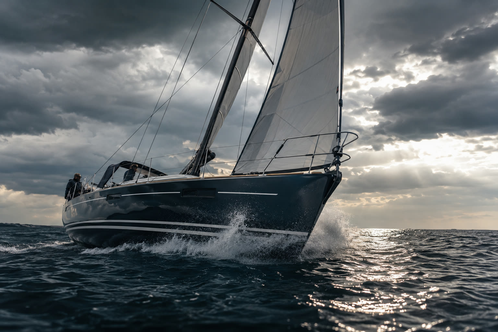

01NM 32 — „Herrschaft“
Performance Cruiser · Ausbildung + Charter am Neusiedler See
Länge9,75 m
Tiefgang1,80 m
Segelfläche54 m²
Plätze8 Personen
Die Seele der Flotte. Scharf und schnell, dennoch verzeihend — die Hauptrolle bei den ICC-Übungen und im Charter am Neusiedler See.
Charter-Anfrage